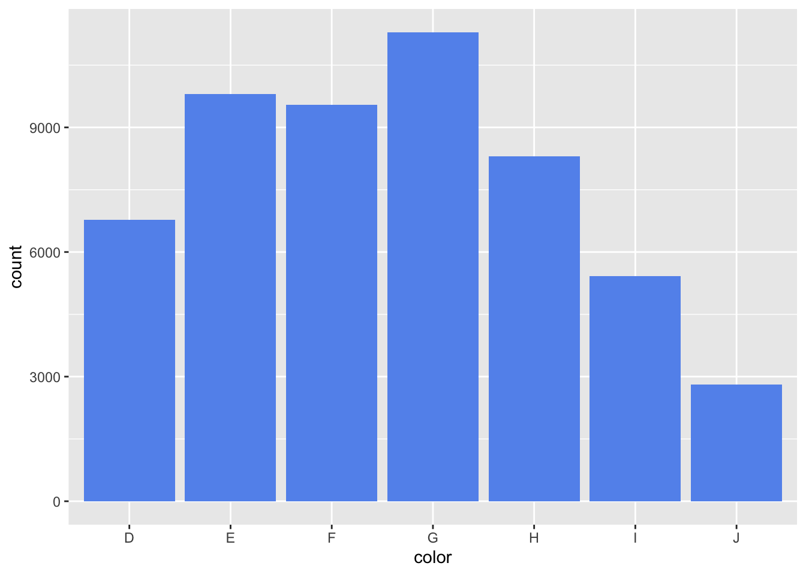
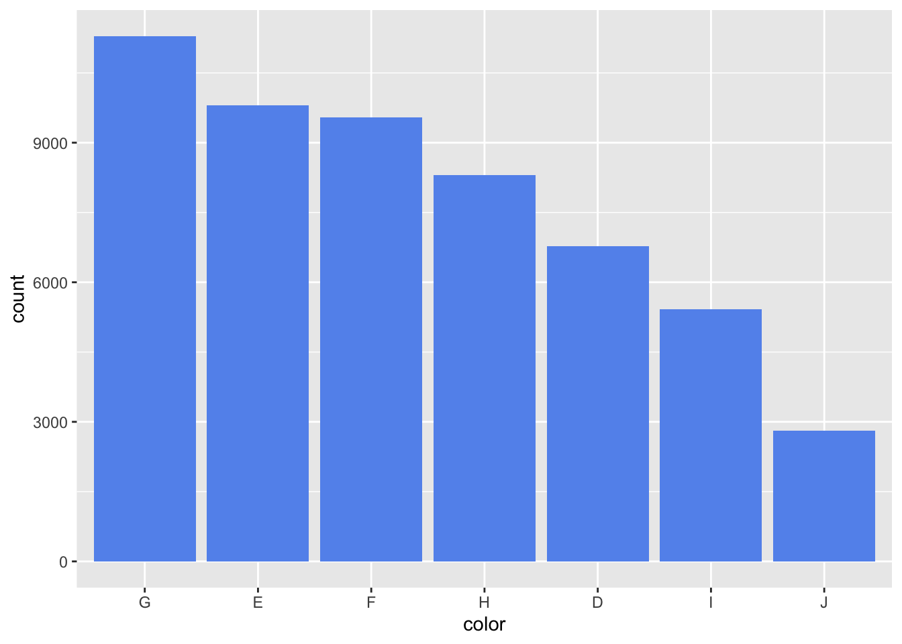
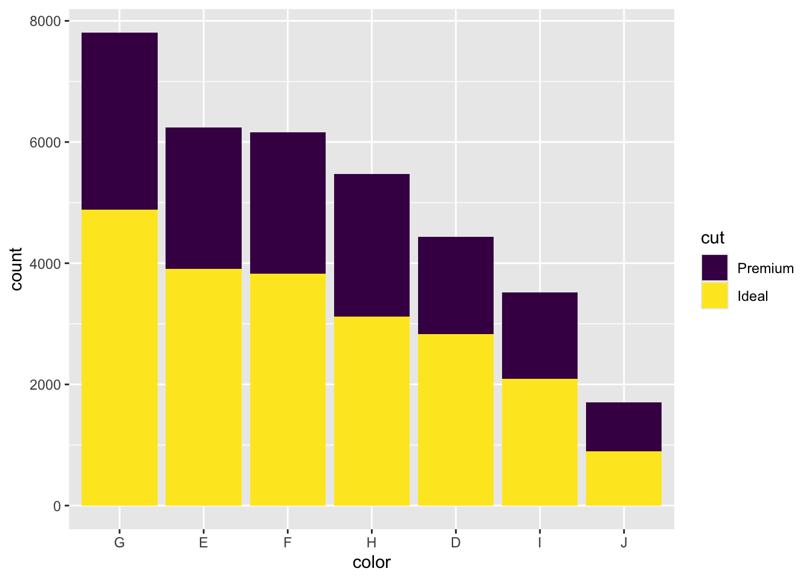
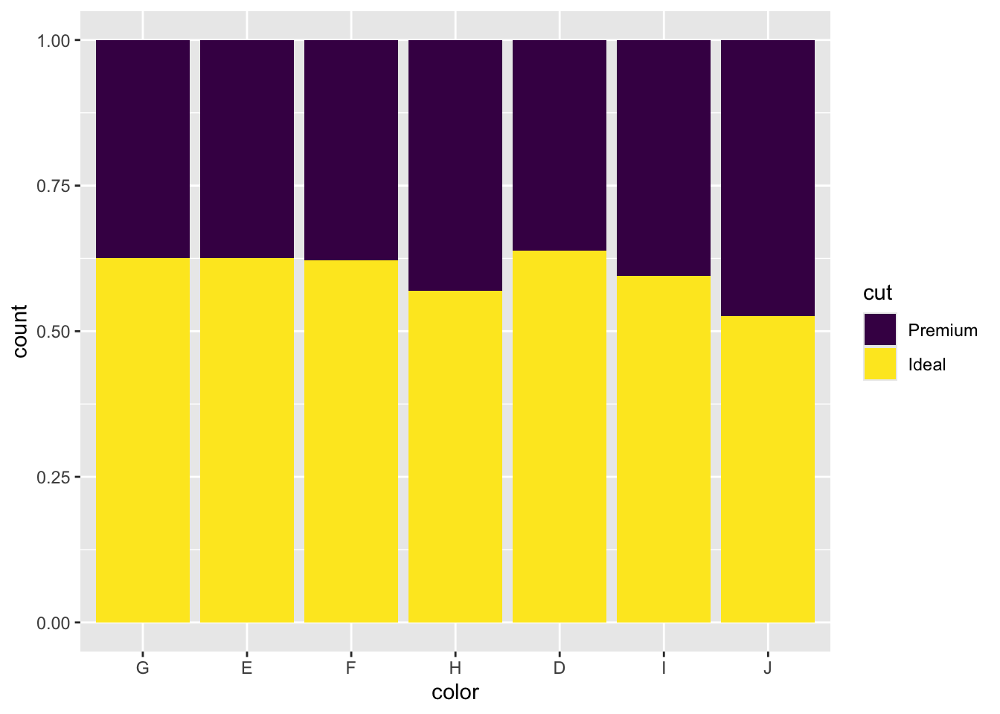
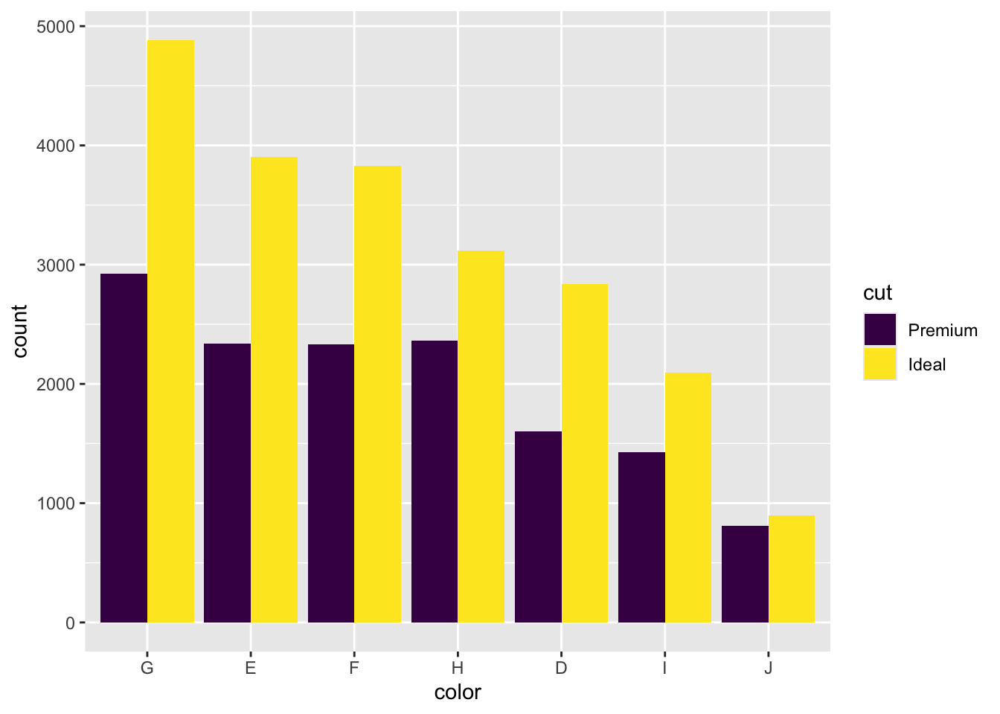
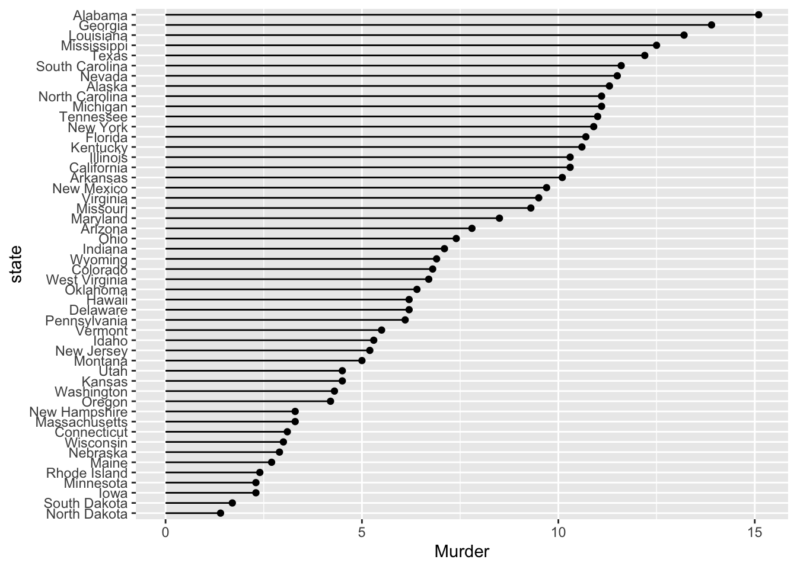
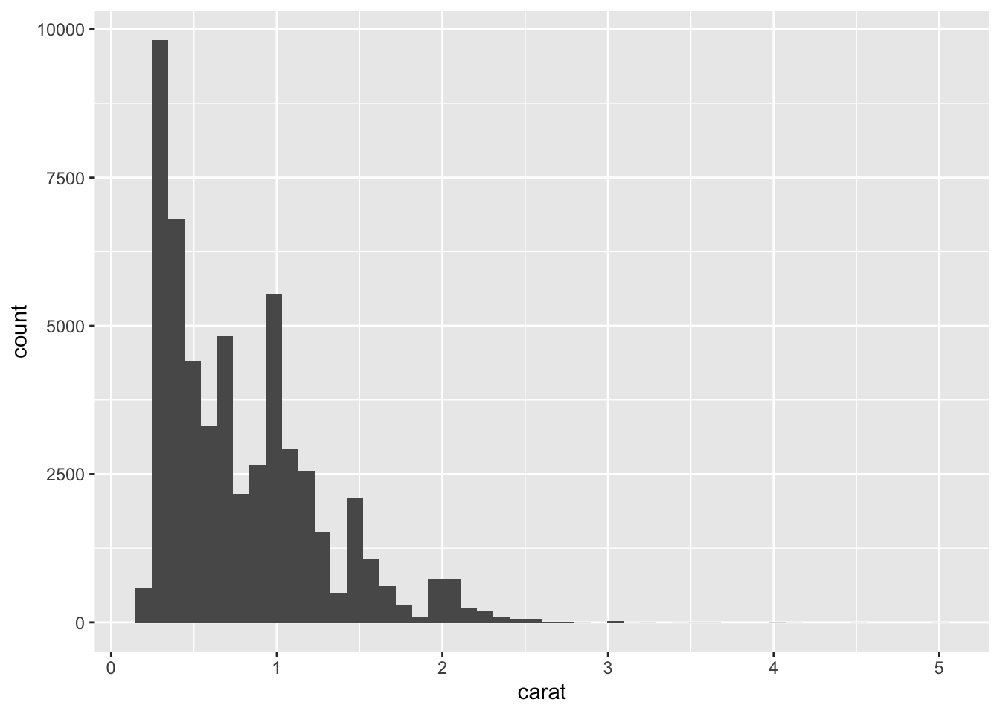

ggplot(diamonds, mapping = aes(color)) +
geom_bar(fill = "cornflowerblue")

Let’s take a deeper dive into some of the layer options we hvae. As a reminder, a layer take the mapped data and displays it in a way that humans can understand as a representation of data.
The bar chart is one of the most common data visualizations, which makes it more intuitive for readers as they are able to quickly understand the plot and what it means. There are two ways to create a bar chart in ggplot2.
geom_bar()geom_bar() makes the height of the bar proportional to the number of cases in each group of the x-axis. In other words, geom_bar() will tabulate frequencies for you based on a categorical variable, without needing to do so yourself, and will visualize those frequencies in a bar chart.
ggplot(diamonds, mapping = aes(color)) +
geom_bar(fill = "cornflowerblue")
geom_col()geom_col(), on the other hand, create the bars based on values within the data for both x and y. To create the above chart with geom_col(), we could use the count() function first to tabulate the data by color from the diamonds data frame. color is the name of a variable in the diamonds data frame that identifies how clear a diamond is in rating.
diamonds |>
count(color, name = "count") |> # name = just changes the name of the output from n to the value in the quotation marks
ggplot(mapping = aes(x = color,
y = count)) +
geom_col(fill = "cornflowerblue")
I often prefer to use geom_col() because I like to visually see my data when I’m using it. Plus, when using other variables to modify the graph, it is helpful to have a dataset that is at the observation-level that we are visualizing as opposed to the uncounted raw data.
One very common visualization need is to arrange the bars in ascending or descending order. We can do so by modifying the data first with forcats::fct_reorder().
diamonds |>
count(color, name = "count") |> # tzbulate by color variable
mutate(color = fct_reorder(.f = color,
.x = count,
.desc = TRUE)) |> # reorder color variable based on the count
ggplot(mapping = aes(x = color,
y = count)) + # create plot
geom_col(fill = "cornflowerblue") # visualize bar chart layer
We sometimes want to visualize multiple categories on the same graph. For example, in the diamonds dataset, we might want to examine the frequencies of cut by color for only Ideal or Premium cuts.
We can do this by adding a fill aesthetic to the graph. We also need to do some data manipulation first to create a count by cut and color. To arrange the graph such that the graph is still descending by color, we also need to add a count by color, which we can do with the group_by() and mutate() functions.
diamonds |>
filter(cut %in% c("Ideal",
"Premium")) |> # keep only rows where cut is Ideal or Premium
count(color, cut, name = "count") |> # tabulate by color and cut, counting by each unique combination
group_by(color) |> # group by color
mutate(color_count = sum(count)) |> # aggregate by color, but adding a variable so observation level stays the same
ungroup() |> # remove grouping
mutate(color = fct_reorder(.f = color,
.x = color_count,
.desc = TRUE)) |> # reorder color to be descending based on count of color
ggplot(mapping = aes(x = color,
y = count,
fill = cut)) + # create graph
geom_col() # plot layer
If we wanted a stacked bar chart that represents the proportion of a category made up by another category, we could do this with the position aesthetic.
diamonds |>
filter(cut %in% c("Ideal",
"Premium")) |> # keep only rows where cut is Ideal or Premium
count(color, cut, name = "count") |> # tabulate by color and cut, counting by each unique combination
group_by(color) |> # group by color
mutate(color_count = sum(count)) |> # aggregate by color, but adding a variable so observation level stays the same
ungroup() |> # remove grouping
mutate(color = fct_reorder(.f = color,
.x = color_count,
.desc = TRUE)) |> # reorder color to be descending based on count of color
ggplot(mapping = aes(x = color,
y = count,
fill = cut)) + # create graph
geom_col(position = "fill") # plot layer such that there are standardized bars
We will discuss later how to change the scales to be percent.
Let’s say instead we wanted to visualize the genders present in the data frame with colors side by side. We can do this by setting the position aesthetic equal to "dodge".
diamonds |>
filter(cut %in% c("Ideal",
"Premium")) |> # keep only rows where cut is Ideal or Premium
count(color, cut, name = "count") |> # tabulate by color and cut, counting by each unique combination
group_by(color) |> # group by color
mutate(color_count = sum(count)) |> # aggregate by color, but adding a variable so observation level stays the same
ungroup() |> # remove grouping
mutate(color = fct_reorder(.f = color,
.x = color_count,
.desc = TRUE)) |> # reorder color to be descending based on count of color
ggplot(mapping = aes(x = color,
y = count,
fill = cut)) + # create graph
geom_col(position = "dodge") # change position such that it is a chart with side by side columns
If we wanted to reorder the bars such that Ideal goes first, we could use the forcats::fct_rev() function, which reverses the levels in a factor.
diamonds |>
filter(cut %in% c("Ideal",
"Premium")) |> # keep only rows where cut is Ideal or Premium
count(color, cut, name = "count") |> # tabulate by color and cut, counting by each unique combination
group_by(color) |> # group by color
mutate(color_count = sum(count)) |> # aggregate by color, but adding a variable so observation level stays the same
ungroup() |> # remove grouping
mutate(color = fct_reorder(.f = color,
.x = color_count,
.desc = TRUE)) |> # reorder color to be descending based on count of color
ggplot(mapping = aes(x = color,
y = count,
fill = fct_rev(cut))) + # create graph with factor reversed
geom_col(position = "dodge") # change position such that it is a chart with side by side columns
Another way of visualizing bar-chart like data is the lollipop chart. I like this chart when there are a lot of categories, like if we’re using state-level data. We can create a lollipop chart with the geom_segment() and geom_point() functions.
state.x77 |>
data.frame() |> # converts this data into a data frame
rownames_to_column(var = "state") |> # converts the state row names into a column
mutate(state = fct_reorder(state, Murder)) |> # reorder by Murder so chart is ascending
ggplot(mapping = aes(x = Murder, y = state)) + # create plot with mapped aesthetics of murder rate on x-axis, state on y-axis
geom_segment(mapping = aes(x = 0, # create segment that starts at 0
xend = Murder, # that ends at the Murder Rate
y = state, # begins at each state
yend = state)) + # ends at each state
geom_point()
We can make a simple scatter plot with geom_point(data = <your data>, mapping = aes(x = <var1>, y = <var2>)).
ggplot(data = diamonds, mapping = aes(x = carat, y = price)) +
geom_point()
A line plot works similarly to a scatter plot in its construction. Line plots typically display values over a specified time interval. We generally want one line per group we would like to visualize over time, so the data should be constructed in that manner.
# create data
set.seed(0) # set randomization so that this is reproducible
my_years <- 2000:2020 # create sequential years between 2000 and 2020
random_numbers<- rnorm(n = 21,
mean = 50,
sd = 25) # create random numbers with mean of 50 and sd of 25
# create tibble
my_df <- tibble(my_years, random_numbers)
# line plot
ggplot(data = my_df, mapping = aes(my_years, random_numbers)) +
geom_point() +
geom_line()
We create histograms with the geom_histogram() function.
ggplot(diamonds) +
geom_histogram(mapping = aes(carat),
bins = 50) # set number of bins
Relatedly, you can create a density plot with geom_density().
ggplot(diamonds) +
geom_density(mapping = aes(carat))
We create box plots with the geom_boxplot() function.
ggplot(diamonds) +
geom_boxplot(mapping = aes(x = carat))
If you want to create a box plot by category, you can include the category in one of the axes.
ggplot(diamonds) +
geom_boxplot(mapping = aes(x = carat,
y = cut))